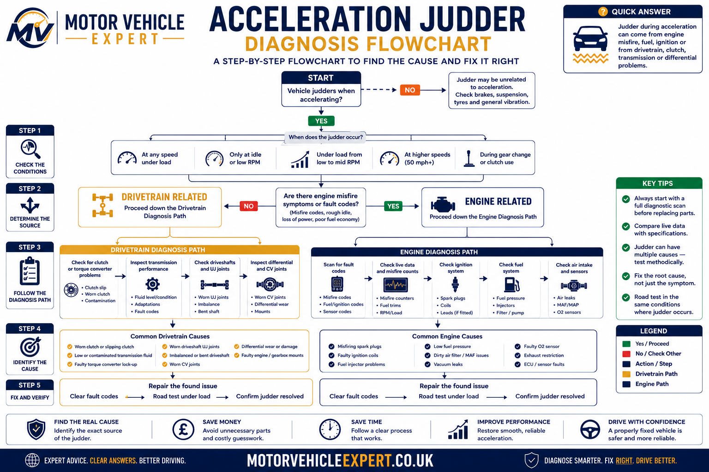
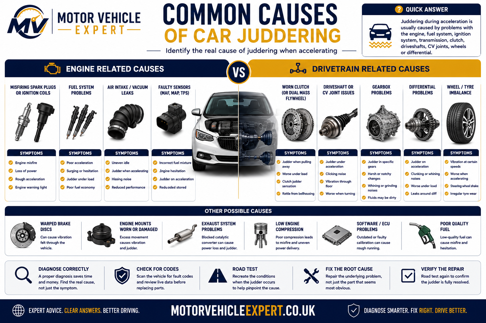
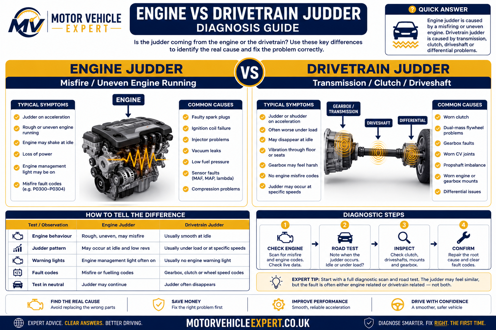
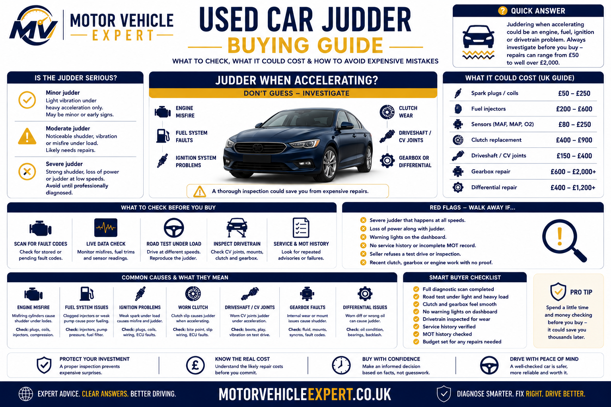

Why is my car juddering when accelerating?
The most common causes are an engine misfire, worn spark plugs or ignition coils, clutch or dual mass flywheel wear, worn inner CV joints, damaged driveshafts, weak engine or gearbox mounts, poor fuel pressure, injector faults, turbo boost problems, tyre damage, wheel imbalance or transmission faults.
The word judder describes how the problem feels, but it does not identify the faulty component. Different faults can produce almost identical shaking from the driver’s seat. The most useful clue is whether the vibration follows engine speed, road speed, throttle load, gear selection or wheel rotation.
More likely when the vibration changes with engine revs or appears under heavy throttle.
More likely when the vibration rises with vehicle speed regardless of the gear selected.
More likely when the vehicle only shakes during hard acceleration, uphill driving or towing.
Flashing warning lights, violent shaking, burning smells or tyre damage require faster attention.
Engine Misfire
Worn spark plugs, ignition coils, injectors or fuel pressure faults may cause shaking that becomes worse under load.
Driveshaft Or CV Joint
A worn inner CV joint can cause vibration mainly during acceleration and may improve when the throttle is released.
Clutch Or Flywheel
A contaminated clutch, worn pressure plate or dual mass flywheel can cause judder when pulling away or applying power.
Do not replace parts based only on the word “judder”. First confirm whether the symptom follows revs, road speed or load. That observation can prevent unnecessary ignition, clutch, wheel or drivetrain repairs.
Quick acceleration judder diagnosis map
Use the conditions below to narrow the fault area. These clues do not replace a physical inspection, but they help determine which systems should be checked first.
Judder changes with RPM
Suspect ignition misfire, injector fault, fuel pressure, clutch, flywheel, engine mount or gearbox input.
Vibration rises with speed
Suspect wheel imbalance, tyre damage, bent wheel, wheel bearing, driveshaft or CV joint wear.
Only under acceleration
Suspect misfire under load, turbo boost leak, weak fuel pressure, engine mount movement, clutch slip or inner CV joint wear.
Low-speed clutch judder
Suspect clutch contamination, pressure plate wear, flywheel damage, engine mounts or gearbox mounts.
Judder with engine light
Misfire, boost, air metering, fuelling or emissions faults may be stored in the engine control module.
Started after pothole or kerb
Inspect for tyre bulges, internal tyre damage, bent wheels, wheel bearing damage, alignment changes or suspension damage.

Matching the vibration to the operating condition is usually more useful than replacing the component most commonly associated with the symptom.
Engine-related faults usually follow combustion events and engine RPM. Wheel and tyre faults follow vehicle speed. Clutch, driveshaft, mount and turbo faults often become most noticeable when torque is being applied.
What does the judder feel like and when does it happen?
Before inspecting components, describe the symptom accurately. A pulsing misfire, steering-wheel vibration, clutch shudder and complete body vibration may all be described as juddering, but they point towards different areas of the vehicle.
Judder only when pulling away
Clutch contamination, worn clutch friction material, pressure plate distortion, dual mass flywheel wear and engine or gearbox mounts are common possibilities.
Car judders when pulling away →Judder during hard acceleration
Heavy throttle can expose worn ignition coils, spark plugs, injector problems, low fuel pressure, boost leaks and worn inner CV joints.
Acceleration power loss guide →Judder only at higher road speeds
Wheel imbalance, tyre distortion, bent wheels, worn wheel bearings and driveshaft imbalance become more likely when vibration rises with road speed.
Car shakes at high speed →Judder when accelerating uphill
Uphill driving increases engine and clutch load, exposing weak ignition, fuelling, turbo, clutch and drivetrain faults.
Car loses power uphill →Judder with a flashing engine light
A severe active misfire is likely. Continued driving can overheat and damage the catalytic converter.
Flashing engine light guide →Judder that disappears when lifting off
A load-related fault becomes more likely, including inner CV joint wear, engine mount movement, turbo boost problems, misfire or clutch and drivetrain issues.
Judder continues while coasting
Tyres, wheels, wheel bearings, driveshafts and suspension should be investigated because the vibration is continuing without engine torque being applied.
Judder started after recent work
Recheck the recently disturbed area first, including wheel seating, wheel balance, fuel system priming, engine mounts, clutch fitting or undertray and driveline components.
Judder pattern and likely fault area
Use this table as a starting point when explaining the problem to a garage or deciding what should be inspected first.
| Judder Pattern | Likely Fault Area | First Checks |
|---|---|---|
| Follows engine RPM | Ignition, fuel, clutch, flywheel or engine mounts | Fault codes, misfire data, service history and engine movement |
| Follows road speed | Tyres, wheels, bearings or driveshafts | Tyre condition, wheel balance, wheel runout and bearing play |
| Only under heavy throttle | Misfire, fuel pressure, turbo, clutch or inner CV joint | Load road test, live data, boost pressure and driveline inspection |
| Only when pulling away | Clutch, flywheel, engine mount or gearbox mount | Clutch take-up, mount movement and flywheel noise |
| Continues while coasting | Tyres, wheels, bearings or driveshaft imbalance | Wheel and tyre inspection followed by road-speed testing |
| With flashing engine light | Active engine misfire | Stop heavy driving and scan immediately |
Note the gear selected, engine speed, road speed, throttle position, whether the engine is hot or cold, and whether the judder disappears when you lift off. These details can shorten diagnostic time.
Most common causes of juddering under acceleration
The following faults can all produce shaking or vibration when power is applied. Some affect engine combustion, while others allow unwanted movement or vibration through the clutch, gearbox, driveshafts, wheels or vehicle body.
Engine Misfire
Worn spark plugs, ignition coils, injectors, compression loss or incorrect air-fuel mixture can cause uneven power delivery.
Clutch Or Flywheel
A contaminated clutch, distorted pressure plate or worn dual mass flywheel may shudder as torque passes into the gearbox.
Driveshaft Or CV Joint
Worn inner CV joints commonly cause acceleration vibration that reduces when the throttle is released.
Engine Or Gearbox Mount
Weak mounts allow excessive drivetrain movement and can transmit vibration, thumps or shaking through the body.
Poor Fuel Delivery
Low fuel pressure, blocked filters, weak pumps or injector faults can interrupt power delivery under acceleration.
Turbo Boost Fault
Split boost hoses, intercooler leaks, control faults or unstable turbo pressure may cause surging, hesitation or judder.
Tyre Damage
Bulges, internal belt damage, flat spots, low pressure and uneven wear can create vibration that becomes stronger with speed.
Wheel Imbalance Or Damage
Missing balance weights, bent wheels or poor wheel seating may cause steering or body vibration at particular speeds.
Transmission Fault
Manual, automatic and dual-clutch transmission faults can cause shuddering during gear engagement, torque converter lock-up or power application.

Several systems can produce a similar driver complaint, which is why road-test pattern analysis should come before replacing parts.
Replacing spark plugs, ignition coils or sensors will not cure vibration caused by a damaged tyre, bent wheel, worn CV joint, weak mount or clutch and flywheel problem.
Engine or drivetrain? How to tell the difference
One of the biggest mistakes drivers make is assuming every acceleration judder comes from the engine. In reality, the engine, clutch, gearbox, driveshafts, tyres and wheels can all produce very similar vibrations. A careful road test usually separates these faults before any parts are replaced.
Engine-Speed Judder
If the vibration rises and falls with engine RPM, regardless of vehicle speed, the fault is more likely to involve combustion or torque delivery.
- ✓Engine misfire
- ✓Ignition coils
- ✓Spark plugs
- ✓Fuel injectors
- ✓Fuel pressure
- ✓Turbo boost faults
Load-Related Judder
If the vibration only appears while applying power and immediately reduces when lifting off the throttle, torque transmission components become more likely.
- ✓Inner CV joints
- ✓Driveshafts
- ✓Clutch assembly
- ✓Dual mass flywheel
- ✓Engine mounts
- ✓Gearbox mounts
Wheel-Speed Vibration
If the vibration follows vehicle speed instead of engine speed, rotating suspension and wheel components become the priority.
- ✓Wheel balance
- ✓Tyre damage
- ✓Bent wheel
- ✓Wheel bearing
- ✓Tyre flat spots
- ✓Wheel alignment

Understanding what the vibration follows is usually the quickest route to the correct diagnosis.
Engine vs drivetrain vs wheel faults
Professional technicians normally identify the source of the vibration before replacing components. These patterns provide useful clues.
| Symptom Pattern | Most Likely Area | First Inspection |
|---|---|---|
| Changes with engine RPM | Engine or clutch | Fault codes, ignition, fuel system |
| Changes with road speed | Tyres or wheels | Wheel balance and tyre inspection |
| Only under heavy throttle | Drivetrain | CV joints, driveshafts, mounts |
| Only pulling away | Clutch or flywheel | Clutch operation and mount movement |
| Present while coasting | Wheels or bearings | Tyres, bearings and suspension |
| Flashing engine light | Engine misfire | Immediate diagnostic scan |
Always repeat the road test in different gears. If the vibration changes when the engine speed changes but the road speed stays similar, the engine or clutch is normally responsible. If the vibration stays at the same road speed regardless of gear selection, inspect the wheels, tyres, bearings and driveshafts first.
Engine-related causes of acceleration judder
Engine faults usually create uneven power delivery rather than a constant vibration. Modern petrol and diesel engines rely on accurate ignition timing, fuel delivery, air measurement and turbo boost. When one of these systems begins to fail, the engine may shake whenever it is asked to produce more power.
Engine Misfire
A cylinder that fails to burn fuel correctly causes an uneven firing pattern, producing noticeable shaking under acceleration.
Worn Spark Plugs
Old spark plugs require higher firing voltage and often misfire under heavy engine load before causing problems at idle.
Ignition Coils
Weak coils frequently fail only when cylinder pressures increase during acceleration.
Fuel Pressure
A weak fuel pump or blocked filter may prevent the engine receiving enough fuel under heavy acceleration.
Fuel Injectors
Poor injector spray patterns can create hesitation, vibration and uneven combustion.
Boost Problems
Split boost hoses, boost leaks or sticking turbo control components often cause vibration together with poor acceleration.
If the engine management light flashes while the vehicle is juddering, reduce engine load immediately and arrange diagnosis as soon as possible. Continued driving can damage the catalytic converter.
Clutch and flywheel problems
Manual transmission vehicles commonly develop judder because the clutch and flywheel transfer all engine torque into the gearbox. Wear, contamination or excessive heat can cause the clutch to grab unevenly instead of engaging smoothly.
Clutch Judder
Usually strongest when moving away from rest or climbing hills.
Flywheel Wear
A worn dual mass flywheel allows excessive movement between the engine and gearbox.
Engine Movement
Broken engine or gearbox mounts can exaggerate clutch vibration during acceleration.
Signs pointing towards the clutch
| Symptom | Likely Cause | Repair Priority |
|---|---|---|
| Judder pulling away | Clutch contamination | Medium |
| Judder uphill | Clutch slipping | High |
| Burning smell | Overheated clutch | High |
| Rattling at idle | Dual mass flywheel | High |
| Movement when lifting clutch | Engine mount wear | Medium |
For replacement costs, labour times and common clutch failures, read our clutch replacement cost guide .
Driveshaft and CV joint faults
Inner CV joints are among the most common causes of acceleration vibration that is mistaken for an engine fault. Unlike wheel imbalance, the vibration usually becomes strongest when engine torque is applied and often reduces immediately when the accelerator pedal is released.
Inner CV Wear
Produces vibration during acceleration that often disappears while coasting.
Bent Shaft
A damaged driveshaft can create vibration that increases with both speed and load.
Split Boot
Loss of grease rapidly accelerates CV joint wear and should be repaired quickly.
If the judder immediately reduces the moment you lift off the accelerator but returns as soon as power is applied again, inspect the inner CV joints and driveshafts before replacing engine components.
When acceleration judder needs urgent attention
Some acceleration vibrations are uncomfortable but relatively minor. Others indicate an active engine misfire, damaged tyre, failing driveshaft or clutch fault that may become unsafe or cause expensive secondary damage. Stop treating the symptom as a normal vibration if it is accompanied by warning lights, severe shaking, unusual noises or loss of control.
Flashing Engine Light
A flashing engine management light usually means the ECU has detected a severe misfire capable of damaging the catalytic converter.
Visible Tyre Bulge
A bulged tyre has suffered internal structural damage and may fail without warning, particularly at motorway speed.
Heavy Knocking or Clunking
Severe knocking under acceleration may indicate excessive movement in a driveshaft, CV joint, engine mount or gearbox mount.
Burning Smell
A strong burning clutch smell with judder or slipping suggests the friction material is overheating.
Loss of Directional Control
If the steering wheel shakes violently or the vehicle pulls unpredictably, stop and inspect the tyres, wheels and suspension.
Sudden Loss of Acceleration
Judder combined with severe power loss may indicate an active misfire, fuel-pressure fault, turbo problem or restricted exhaust.
- !The engine management light is flashing continuously
- !The vehicle shakes violently or becomes difficult to control
- !A tyre has a bulge, exposed cords or rapid pressure loss
- !There is heavy metallic knocking from beneath the vehicle
- !The clutch smells strongly of burning and no longer drives properly
- !The vehicle cannot maintain a safe speed in traffic
Can you drive a car that judders when accelerating?
Whether the vehicle is safe to drive depends on the severity, cause and accompanying symptoms. A mild vibration caused by wheel imbalance may allow a cautious journey to a garage. Severe engine misfire, tyre damage, drivetrain knocking or clutch overheating should not be treated the same way.
Only when the vibration is light, steering remains normal, no warning light is flashing and there are no unusual noises or smells.
Arrange diagnosis promptly if the judder is becoming stronger, appears under moderate throttle or is accompanied by reduced power.
Do not continue when the vehicle shakes violently, the steering becomes unstable, the engine light flashes or the drivetrain knocks.
Judder severity decision table
| Condition | Likely Risk | Can You Drive? | Recommended Action |
|---|---|---|---|
| Light vibration at one motorway speed | Wheel balance or tyre wear | Usually, cautiously | Book a tyre and wheel inspection |
| Judder only under hard acceleration | Misfire, fuel, turbo or CV joint | Limit driving | Avoid heavy throttle and diagnose promptly |
| Judder when pulling away | Clutch, flywheel or mounts | Usually short distance only | Avoid hill starts and excessive clutch slip |
| Flashing engine management light | Severe engine misfire | No | Stop and arrange diagnosis or recovery |
| Tyre bulge or exposed cords | Tyre failure | No | Replace tyre before further driving |
| Heavy knocking under load | Driveshaft or mount failure | No | Recover the vehicle |
| Burning clutch smell with slipping | Clutch overheating | No continued driving | Allow cooling and arrange repair |
Repeatedly accelerating hard to reproduce the judder can overheat the clutch, worsen a drivetrain fault, damage the catalytic converter during a misfire or place additional stress on a damaged tyre. A technician should reproduce the symptom only under controlled conditions.
How much does it cost to fix acceleration judder?
The repair cost depends entirely on which system is responsible. A wheel balance or set of spark plugs may be inexpensive, while a clutch, dual mass flywheel, fuel injector or driveshaft replacement can cost considerably more. Diagnosis should come before parts replacement because several faults produce almost identical symptoms.
Diagnostic Scan
Fault-code scan and basic live-data assessment.
£40–£100Wheel Balancing
Balancing one or more wheels and checking tyre condition.
£30–£80Spark Plugs
Replacement cost varies with engine layout and plug type.
£80–£250Ignition Coil
Replacement of one failed coil, including diagnosis.
£90–£220Fuel Injector
Cost depends on petrol, diesel or direct-injection design.
£180–£650 eachDriveshaft or CV Joint
Replacement of a complete shaft or affected joint.
£180–£550Engine or Gearbox Mount
Cost varies according to mount location and labour access.
£150–£500Clutch Replacement
Clutch kit replacement without major flywheel work.
£500–£1,200Clutch and Dual Mass Flywheel
Combined clutch and flywheel replacement where both are worn.
£900–£1,800+Typical UK acceleration-judder repair prices
These broad guide prices include common independent-garage labour rates but can vary by vehicle, engine design, parts quality and location.
| Repair | Typical UK Cost | Usually Needed When | Repair Priority |
|---|---|---|---|
| Diagnostic inspection | £40–£120 | The cause is not visually obvious | First step |
| Wheel balancing | £30–£80 | Vibration occurs at a particular road speed | Medium |
| Tyre replacement | £70–£250 each | Bulge, damage, distortion or severe uneven wear is present | High |
| Spark plug replacement | £80–£250 | Misfire appears under engine load | High |
| Ignition coil replacement | £90–£220 each | A specific cylinder misfire has been confirmed | High |
| Fuel injector replacement | £180–£650 each | Injector balance or electrical testing confirms failure | High |
| Boost hose repair | £100–£350 | A split hose or boost leak has been identified | Medium |
| Driveshaft replacement | £180–£550 | Inner CV wear causes load-related vibration | High |
| Engine mount replacement | £150–£500 | Excessive engine movement is confirmed | Medium |
| Clutch replacement | £500–£1,200 | Judder, slip or friction-material wear is confirmed | High |
| Clutch and flywheel | £900–£1,800+ | Dual mass flywheel wear accompanies clutch failure | High |
Acceleration judder is a symptom, not a diagnosis. Replacing a clutch will not repair an engine misfire, and replacing ignition parts will not cure an inner CV-joint vibration. Paying for a proper road test and diagnostic inspection is normally cheaper than guessing.
For a wider overview of typical garage prices, labour costs and major repair decisions, see our UK car repair costs guide .
Can acceleration judder cause an MOT failure?
There is no separate MOT test item called “acceleration judder”. However, the underlying cause may result in a failure if it affects emissions, tyres, steering, suspension, driveshafts, engine mountings or the operation of an obligatory warning light.
Engine Misfire
A misfire may cause excessive emissions or prevent the engine from completing the emissions test correctly.
Engine Management Light
An illuminated malfunction indicator lamp may result in failure when it indicates a relevant emissions-control defect.
Tyre Damage
Bulges, exposed cords, insufficient tread or other dangerous tyre defects can fail the MOT.
Engine Mount Damage
A severely insecure or excessively deteriorated mounting may be recorded where it creates a safety concern.
CV Boot or Joint
A damaged CV boot, insecure driveshaft or excessive joint wear may be recorded during the inspection.
Wheel Bearing or Suspension
Excessive wheel-bearing play or unsafe suspension wear can cause both vibration and MOT failure.
Acceleration-judder causes and MOT outcomes
| Underlying Fault | Direct MOT Item? | Possible Result | Why |
|---|---|---|---|
| Wheel imbalance only | No | Usually not a failure | Balancing itself is not directly assessed |
| Dangerous tyre defect | Yes | Major or dangerous defect | Tyre structure and condition are inspected |
| Engine misfire | Indirectly | Possible emissions failure | Combustion faults can raise emissions |
| Illuminated engine warning light | Yes, where applicable | Possible major defect | The warning system indicates an emissions-related fault |
| Worn clutch | No direct clutch test | Usually not by itself | Clutch condition is not directly dismantled or measured |
| Insecure engine mount | Yes | Possible major defect | Security and condition may affect safety |
| Worn wheel bearing | Yes | Major or dangerous defect | Excessive play or roughness can be unsafe |
| Damaged CV boot | Yes | Advisory or failure | Outcome depends on severity and component security |
The MOT is a minimum roadworthiness inspection carried out at one point in time. A vehicle may pass with a clutch, injector, wheel-balance or early drivetrain problem that still causes acceleration judder. The fault requires separate mechanical diagnosis.
Should you buy a used car that judders when accelerating?
Acceleration judder is never something to ignore when viewing a used car. Although some causes, such as wheel balancing or worn spark plugs, are relatively inexpensive, the same symptom can also indicate a worn clutch, failing dual mass flywheel, damaged driveshaft, injector faults, turbocharger problems or expensive transmission repairs.
The safest approach is to identify exactly when the vibration occurs, whether warning lights are present and whether the seller has evidence that the fault has already been professionally diagnosed and repaired.
Wheel balancing, tyre replacement, routine servicing or spark plug replacement are generally inexpensive if supported by evidence.
Without a proper diagnosis you cannot know whether the repair will cost £80 or £1,500.
Walk away unless the purchase price realistically reflects the repair cost and associated risk.

A careful inspection and road test can often identify whether the vibration is likely to be a simple maintenance issue or a significant mechanical problem.
Questions to ask the seller
Service history
- ✓When were the spark plugs replaced?
- ✓Has the fuel filter been serviced?
- ✓Has the vehicle recently been diagnosed?
- ✓Are there invoices for recent repairs?
Road test
- ✓Accelerate gently and firmly
- ✓Drive uphill if possible
- ✓Test different gears
- ✓Drive at motorway speeds where legal
Acceleration judder buying assessment
| Finding | Buying Risk | Likely Cost | Recommendation |
|---|---|---|---|
| Recently balanced wheels with invoices | Low | Low | Generally acceptable |
| New spark plugs solved previous issue | Low | Low | Confirm repair during road test |
| Judder but no diagnosis | Medium | Unknown | Reduce offer or inspect first |
| Engine warning light illuminated | High | Unknown | Do not buy without diagnosis |
| Burning clutch smell | High | High | Expect clutch replacement |
| Heavy drivetrain vibration | High | High | Walk away unless heavily discounted |
| Seller says "they all do that" | Very High | Unknown | Treat as a major warning sign |
Never accept explanations such as "it only needs tracking", "it probably needs a service" or "it's just because it's cold" without evidence. If the seller cannot demonstrate the cause of the vibration, assume the repair could be one of the more expensive possibilities until proven otherwise.
Related buying guides: Questions to ask when buying a used car, How to check MOT history, How to check service history, Is 100k miles too much? and How to spot accident repairs.
Continue Learning
Acceleration judder is often a symptom rather than a fault itself. Continue with these related Motor Vehicle Expert guides to diagnose engine, drivetrain, clutch and vehicle vibration problems in more detail.
Vehicle Diagnostics
Related Symptoms
Repairs & Buying Advice
Frequently asked questions
Why does my car only judder when I accelerate?
Acceleration places the engine, clutch, driveshafts and fuel system under their highest load. Faults that are not noticeable at idle or cruising speed often become obvious only when torque demand increases.
Can low-quality fuel cause acceleration judder?
Poor-quality fuel may contribute to hesitation or misfire, but persistent judder normally indicates an underlying mechanical or electronic fault that requires diagnosis.
Can a worn clutch make the whole car shake?
Yes. A worn or contaminated clutch can produce severe judder during take-off and low-speed acceleration, particularly when moving away uphill.
Will an OBD scanner identify the cause?
An OBD scan is an excellent starting point but will not detect every fault. Wheel imbalance, damaged tyres, worn driveshafts and some clutch faults will not normally generate fault codes.
Can acceleration judder damage other components?
Yes. Continuing to drive with severe misfires, damaged tyres, failing CV joints or clutch slip can lead to additional wear and significantly higher repair costs.
Why does my car judder more when accelerating uphill?
Driving uphill places the engine and drivetrain under greater load. Faults such as a worn clutch, weak ignition coil, failing fuel injector or worn inner CV joint often become much more noticeable when climbing hills because the engine has to produce significantly more torque.
Can worn spark plugs cause acceleration judder?
Yes. Worn or incorrectly gapped spark plugs can cause incomplete combustion under load, resulting in engine misfires, hesitation and noticeable judder during acceleration. Spark plugs are one of the first ignition components that should be inspected on petrol engines.
Can a diesel engine judder when accelerating?
Yes. Diesel vehicles can judder due to injector faults, fuel pressure problems, EGR valve issues, turbocharger faults, blocked diesel particulate filters (DPFs) or worn drivetrain components. Professional diagnosis is usually needed to identify the exact cause.
Can automatic cars suffer from acceleration judder?
Yes. Automatic vehicles may judder because of transmission fluid problems, worn torque converters, dual-clutch transmission faults, engine misfires or driveshaft wear. The vibration is not always caused by the gearbox itself, so a full diagnostic inspection is recommended.
Can wheel balancing cause judder during acceleration?
Wheel imbalance normally causes vibration at specific road speeds rather than only during acceleration. If the vibration appears only when applying throttle, the cause is more likely to be an engine, clutch or drivetrain fault than wheel balance alone.
How do mechanics diagnose acceleration judder?
A technician will usually begin with a road test to reproduce the symptom, followed by an electronic fault-code scan, live-data analysis and a physical inspection of the ignition system, fuel system, engine mounts, clutch, driveshafts, tyres and suspension. This systematic approach helps identify the underlying cause before replacing parts.
Can cold weather make acceleration judder worse?
Cold temperatures can make existing faults more noticeable, particularly weak ignition components, ageing batteries, poor fuel atomisation and worn engine mounts. However, persistent judder should not be considered normal, even during cold starts.
How much does it usually cost to diagnose acceleration judder?
Most UK independent garages charge between £40 and £120 for an initial diagnostic inspection, depending on the vehicle and the tests required. Paying for accurate diagnosis is usually far cheaper than replacing parts based on guesswork.